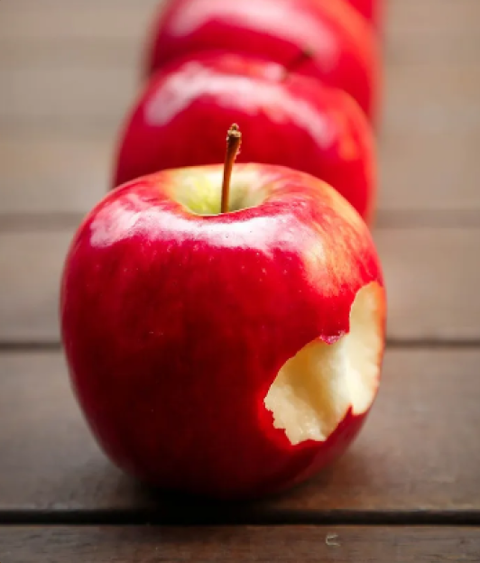
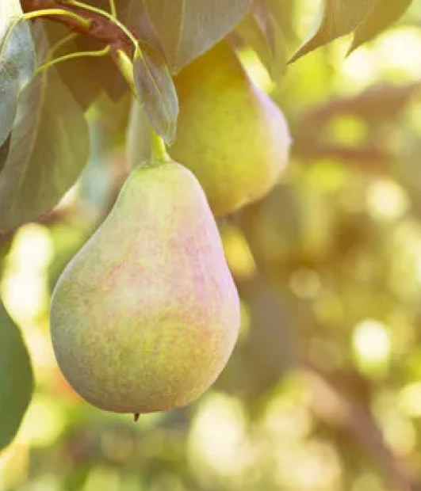
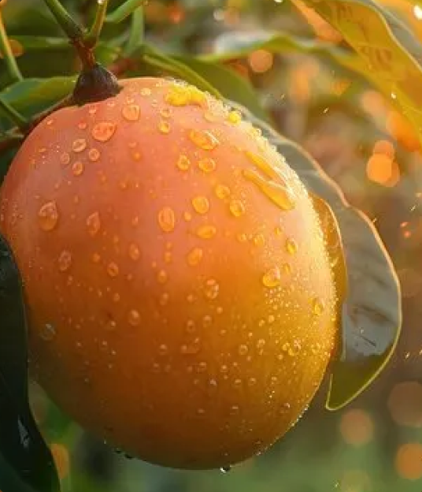
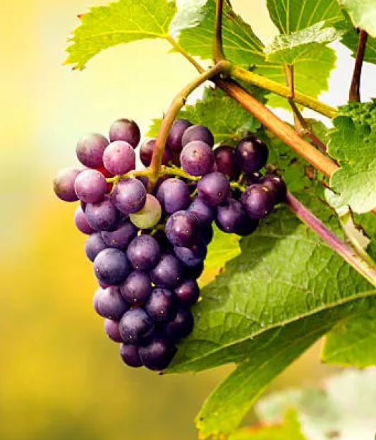
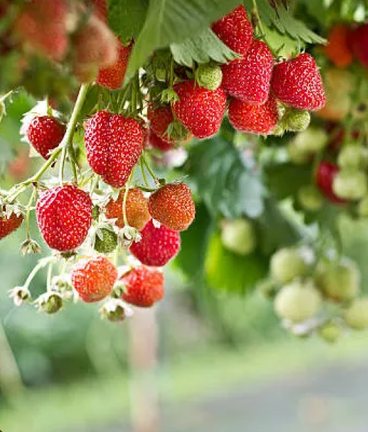

An apple is a round, edible fruit produced by an apple tree. Apple trees are cultivated worldwide and are the most widely grown species in the genus Malus. The tree originated in Central Asia, where its wild ancestor is still found.
The pear is native to coastal, temperate, and mountainous regions of the Old World, from Western Europe and North Africa east across Asia. They are medium-sized trees, reaching up to 20 m tall, often with a tall, narrow crown; a few pear species are shrubby.
A mango is an edible stone fruit produced by the tropical tree Mangifera indica. It originated from the region between Bangladesh and northeastern India. The trees are long-lived, as some specimens still fruit after 300 years.
A grape is a fruit, botanically a berry. Grapes are a non-climacteric type of fruit, generally occurring in clusters. Grapes are a type of fruit that grow in clusters of 15 to 300, and can be crimson, black, dark blue, yellow, green, orange, and pink.
The fruit is widely appreciated for its characteristic aroma, bright red color, juicy texture, and sweetness. It is consumed in large quantities, either fresh or in such prepared foods as jam, juice, pies, ice cream, milkshakes, and chocolates.
